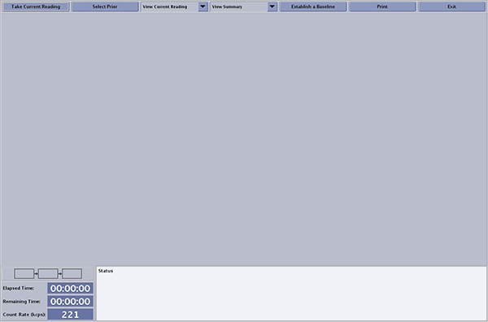
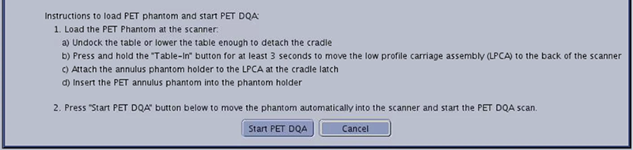
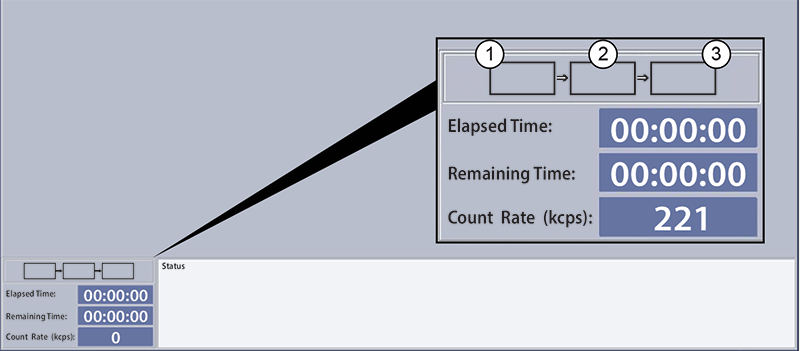
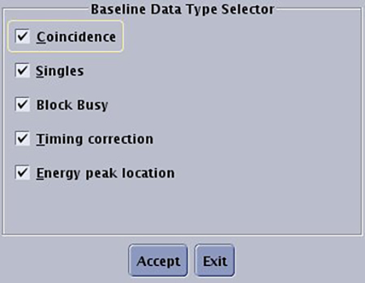

- Object ID: 00000018WIA3018BDB0GYZ
- Topic ID: id_2068468 Version: 1.10
- Date: Jul 1, 2025, 8:01:35 PM
Establishing a baseline for PET Daily Quality Assurance (DQA)
Establish a baseline for PET Daily Quality Assurance (DQA)l
About this task
Use these steps to set a new PET DQA baseline. For best results, set a new baseline once every quarter, at the time of quarterly calibrations.
Procedure
- Remove all phantoms from the table and clear the room of radioactive sources.Note Never run a DQA scan with a person in the scan room.
- From the header area of the screen, click the Tools arrow and select PET Daily QA.
- From the PET DQA screen, click Take Current Reading.
Figure 1. PET DQA screen 
A message provides instructions on the position of the PET Annulus Phantom.Figure 2. PET annulus phantom instructional message 
- Load the PET Annulus Phantom at the scanner.
- Undock the table or lower the table enough to detach the cradle.
- Press and hold Table-In for at least 3 to 5 seconds to move the LPCA to the back of the scanner
- Attach the Annulus Phantom holder to the LPCA at the cradle latch.
- Insert the PET Annulus Phantom into the phantom holder.
- Click Start PET DQA.
- The phantom automatically moves into the scanner to start the PET DQA scan.
- While the DQA is acquired, the time synchronization for the scanner and facility clocks can be checked.
- When the DQA scan completes, the screen defaults to the View Summary mode. This shows a table of pass/fail information called the Report for Current Reading. If the table shows a failure, DO NOT SCAN patients until you resolve the issue.
Figure 3. DQA status tracking for PET/MR annulus phantom 
1 Energy Acquisition (50M) 2 Phantom Position Acquisition (75M) 3 Timing (Unlist) - Select View Summary > View Data.
- This changes the display to the Graph for Current Reading.
- Make sure all indicators are green and all graphs look homogeneous. Investigate and understand any non-green indications.
- "Good" DQA View Data screen with all green passing status on Figure 7 shows an example of a "good" DQA in View Data mode. "Bad" DQA View Data screen with red status failures on Figure 6 shows an example of a DQA with failures.
- Click Establish a Baseline.
- From the Baseline Data Type Selector screen, select every data type.
Figure 4. Baseline Data Type Selector screen 
- Click Accept to set the current PET DQA as the new baseline.
- Optional: Click Print to make a hardcopy of the currently displayed screen.
- Click Exit.
- To remove the PET Annulus Phantom, press and hold Table-In for 3 to 5 seconds. This moves the LPCA to the back of the scanner to remove the phantom and holder.